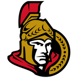

PLUS
/MINUS
Boards
Standings
Scoring
Streaks
Special teams
Center Ice
Desks
Wire
Plus/Minus
HIN
Telegram
Slot Report
Hot Stove
Gazette
Prospect File
Penalty Box
LSB
Rinkside
Building
Postbag
Sweater
Tunnel
Podcast
Numbers
DAL
LA
VAN
NYR
CBJ
CAR
1 min read
On Pace For: The 50-Goal Watch
10 on a 50-goal pace
Plus/Minus
Official bulletin
Saturday, 11 December 2004
Share
Copy link
Goals per game projected over 82. A projection, not a prediction.
Player
Club
GP
G
Pace
Bill Guerin
89
Dallas Stars
29
33
93
Zigmund Palffy
87
Los Angeles Kings
26
29
91
Markus Naslund
91
Vancouver Canucks
28
28
82
Eric Lindros
83
New York Rangers
31
26
69
Geoff Sanderson
83
Columbus Blue Jackets
28
26
76
Jeff O'Neill
87
Carolina Hurricanes
29
26
74
Jaromir Jagr
90
Washington Capitals
28
24
70
Peter Forsberg
95
Colorado Avalanche
27
23
70
Milan Hejduk
89
Colorado Avalanche
27
23
70
Petr Nedved
82
New York Rangers
31
22
58
Related coverage
The Pick Board: Who Actually Controls June, 121 Days Out
The Prospect File · 7 Feb 2005
12 AND 15 AT HOME: THE LEAGUE'S BEST SCORER PLAYS FOR THE HAPPIEST ROOM THAT CAN'T WIN IN FRONT OF YOU
The Penalty Box · 7 Feb 2005
Morning Skate Notes: Elias walks back in and 10 forwards move around him
Home Ice Network · 7 Feb 2005

Injury Report: Ottawa signs Hossa, and the back designation arrives within 3 days
Home Ice Network · 7 Feb 2005
The Bubble Watch: Buffalo and the Islanders are level at 55, and the Sabres have a game in hand
The Hockey Gazette · 7 Feb 2005
Philadelphia pays $69.34M for 52 points, and its club-mates in the Atlantic Division produce nearly half that cost per point
The Hockey Gazette · 7 Feb 2005
More from Plus/Minus
Standings Board: Monday, 7 February 2005
Plus/Minus · 7 Feb 2005
Special Teams Ledger: Power Plays, Best to Worst
Plus/Minus · 7 Feb 2005
Scoring Race: The Top Fifteen
Plus/Minus · 7 Feb 2005
On Pace For: The 50-Goal Watch
Plus/Minus · 7 Feb 2005
Hot Board: Longest Active Winning Streaks
Plus/Minus · 7 Feb 2005
Cold Board: Teams in Freefall
Plus/Minus · 7 Feb 2005
 DAL
DAL LA
LA VAN
VAN NYR
NYR CBJ
CBJ CAR
CAR


 Colorado Avalanche
Colorado Avalanche